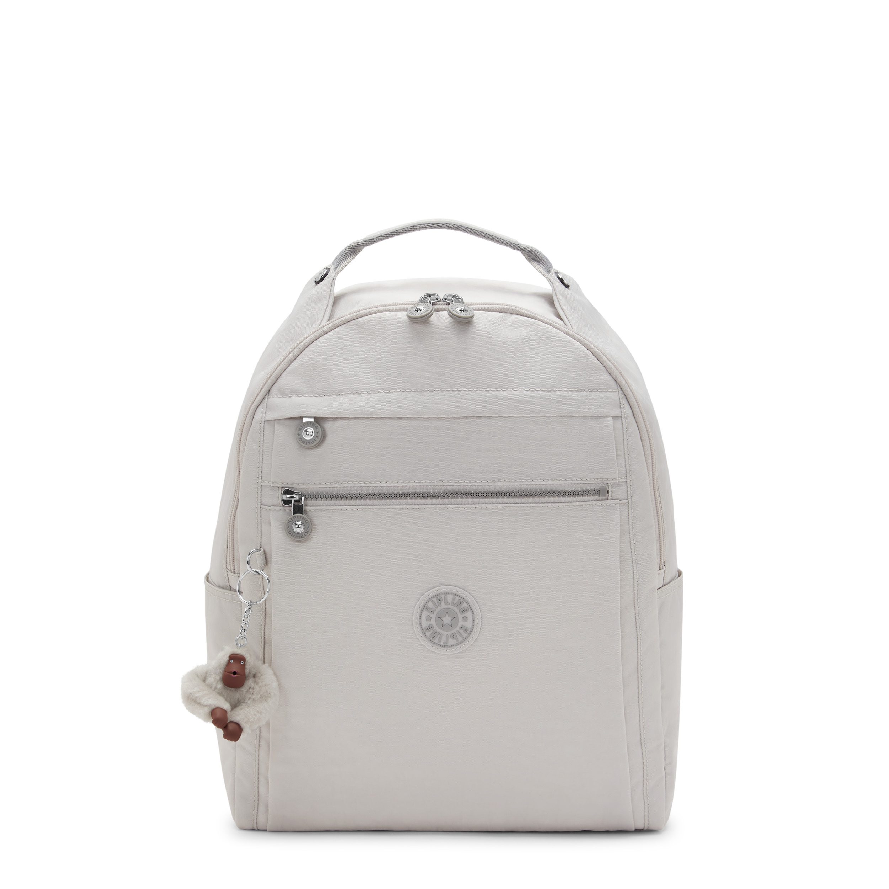
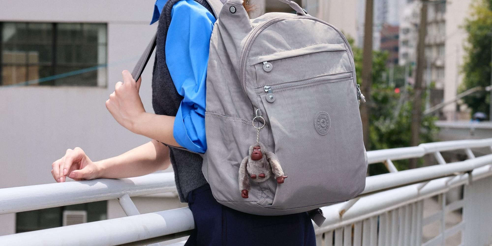

KIPLING 凯浦林 · 官方旗舰店
经典双肩背包（浅米/浅灰）
S3 挖掘场景 · 独立调试产物 · 品类：箱包
轻得像云朵（用户原话）
巨能装 + 分区收纳
毛绒猴子挂件 · 辨识度
耐磨防泼水
宽肩带不勒肩


S3 输入（简版）：主攻人群 = 通勤上班族（背电脑）× 学生党；主攻买点 = 轻 · 能装分区 · 一包多场合。以下场景全部来自内容侧先探 + 四问填充。
场景需求卡 · 主攻 2 / 可测试 2
SC-01 通勤早八 · 开包装物主攻
触发周一早上出门前，地铁通勤装电脑。
画面家门口单手拎包轻抛（对比同事单肩包皱眉）；开包逐层装：电脑、平板、水杯、伞、防晒衣，"还有空间"。
痛点单肩包压肩、大包太重、找东西翻底朝天。
拍法：开包第一视角 + 单手轻抛对比。口播："通勤背电脑的姐妹，这包轻得像没背"
已验证 "轻得像感觉不到重量"3.9 万赞；双肩包合集 3.8 万赞
SC-02 开学/图书馆 · 选包攻略主攻
触发开学季选书包、图书馆泡一天。
画面宿舍书桌前学姐式口播：选包 3 点（能装电脑、不勒肩、能出席所有场合）；切图书馆背包装满书和水杯依然挺括。
痛点书包丑、重、装不下电脑、背久了塌。
拍法：选包攻略口播 + 图书馆实拍。口播："研究生选包攻略：一个包从图书馆背到面试"
已验证 研究生选包 2.6k 赞；开学季内容密集
SC-03 短途差旅 · 一包就走可测试
触发高铁出差 2-3 天、周末旅行。
画面高铁车厢从包里掏出电脑、化妆包、水杯；到站直接背走。
痛点行李多、换包麻烦、包重累肩。
拍法：车厢开包 + 出站对比。口播："2 天出差一个包搞定，说走就走"
已验证 Kipling 用户"旅行通勤都封神""一包在手说走就走"
SC-04 雨天通勤 · 泼水实测可测试
触发下雨天通勤，包淋湿。
画面雨天街边直接往包上泼水，水珠滚落；擦一擦如新，电脑无恙。
痛点包淋湿、东西受潮。
拍法：泼水慢镜 + 擦干特写。口播："下雨天通勤，这包水泼上去都不怕"
已验证 防泼水是 Kipling 用户高频验证点